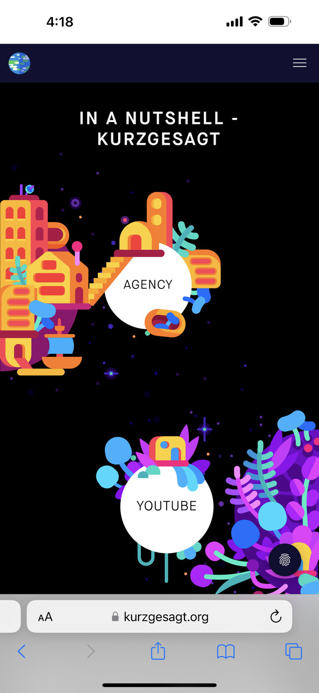
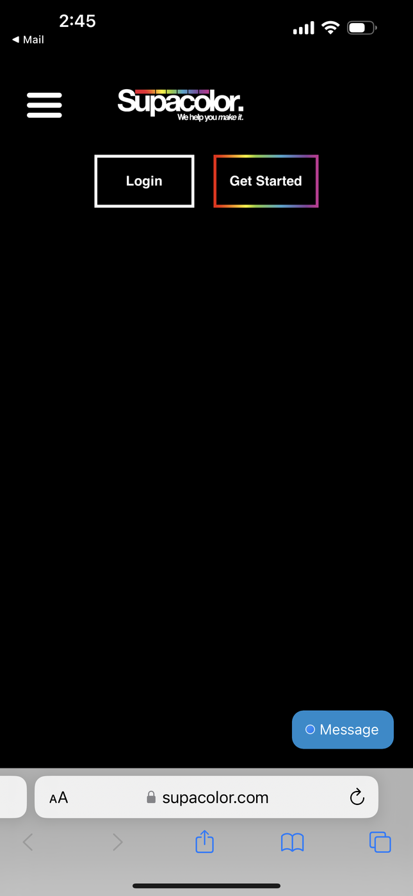
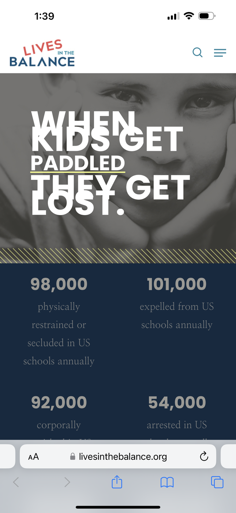

Contrast
Kurzgesat / In a Nutshell https://kurzgesagt.org> In my opinion, Kurzgesat's website complies with the contrast principle because it uses bright colors that are very different from each other. This contrast makes the illustrations and text very visible and stands out from the background. Kurzgesat's website is my favorite website out of these three websites. It is very appealing, and this is one of their purposes since they make science videos and need to keep people engaged. Having attractive illustrations, videos, and a website keeps people interested.
Hick's Law
Supacolor https://supacolor.com Supacolor on mobile browser act following Hick's Law because in the viewport, you only have two choices either login or get started. Having limited options makes the user take less time choosing the desired path. The choices became evident to me the first time I used this website. I did not have an account, so I clicked on the "get started" button. Supacolor is a company that sells printed heat transfers to screen print and embroidery businesses.
Visual Hierarchy
Lives In Balance https://livesinthebalance.org Lives in the balance is an organization that advocates for kids and helps caregivers build better relationships and communication with their kids by providing free training. The mobile version of their website is an example of Visual Hierarchy because your eyes are immediately directed to what they want you to read. In the viewport, you have a decent amount of information, but the size of the text indicates what to read first.